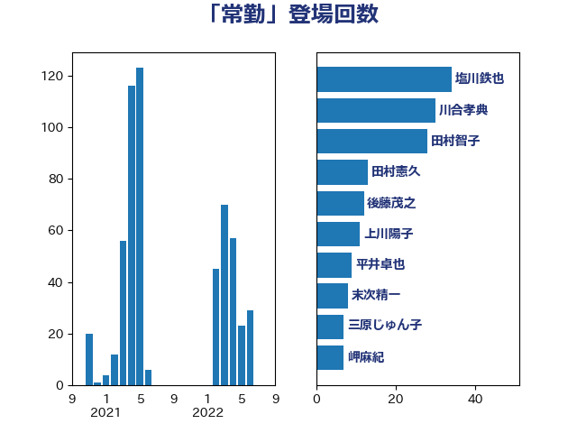

単語「常勤」

| 塩川鉄也 | 日本共産党 | 34 回 |
| 川合孝典 | 国民民主党 | 30 回 |
| 田村智子 | 日本共産党 | 28 回 |
| 田村憲久 | 自由民主党 | 13 回 |
| 後藤茂之 | 自由民主党 | 12 回 |
| 上川陽子 | 自由民主党 | 11 回 |
| 平井卓也 | 自由民主党 | 9 回 |
| 末次精一 | 立憲民主党 | 8 回 |
| 三原じゅん子 | 自由民主党 | 7 回 |
| 岬麻紀 | 日本維新の会 | 7 回 |
| 本村伸子 | 日本共産党 | 7 回 |
| 杉尾秀哉 | 立憲民主党 | 7 回 |
| 坂本哲志 | 自由民主党 | 6 回 |
| 森田俊和 | 立憲民主党 | 6 回 |
| 吉川ゆうみ | 自由民主党 | 4 回 |
| 小沼巧 | 立憲民主党 | 4 回 |
| 岸真紀子 | 立憲民主党 | 4 回 |
| 川田龍平 | 立憲民主党 | 4 回 |
| 林芳正 | 自由民主党 | 4 回 |
| 笠浩史 | 無所属 | 4 回 |
| 舩後靖彦 | れいわ新選組 | 4 回 |
| 藤田文武 | 日本維新の会 | 4 回 |
| 野田聖子 | 自由民主党 | 4 回 |
| 高木かおり | 日本維新の会 | 4 回 |
| 一谷勇一郎 | 日本維新の会 | 3 回 |
| 古川禎久 | 自由民主党 | 3 回 |
| 吉良よし子 | 日本共産党 | 3 回 |
| 大口善徳 | 公明党 | 3 回 |
| 寺田静 | 無所属 | 3 回 |
| 岡本あき子 | 立憲民主党 | 3 回 |
| 岸田文雄 | 自由民主党 | 3 回 |
| 早稲田ゆき | 立憲民主党 | 3 回 |
| 若松謙維 | 公明党 | 3 回 |
| 菊田真紀子 | 立憲民主党 | 3 回 |
| 萩生田光一 | 自由民主党 | 3 回 |
| 高良鉄美 | 無所属 | 3 回 |
| こやり隆史 | 自由民主党 | 2 回 |
| 伊佐進一 | 公明党 | 2 回 |
| 伊藤岳 | 日本共産党 | 2 回 |
| 倉林明子 | 日本共産党 | 2 回 |
| 吉川元 | 立憲民主党 | 2 回 |
| 堀場幸子 | 日本維新の会 | 2 回 |
| 堂故茂 | 自由民主党 | 2 回 |
| 大島敦 | 立憲民主党 | 2 回 |
| 宮本岳志 | 日本共産党 | 2 回 |
| 宮本徹 | 日本共産党 | 2 回 |
| 山崎正恭 | 公明党 | 2 回 |
| 岸信夫 | 自由民主党 | 2 回 |
| 末松信介 | 自由民主党 | 2 回 |
| 松沢成文 | 日本維新の会 | 2 回 |
| 田村まみ | 国民民主党 | 2 回 |
| 米山隆一 | 立憲民主党 | 2 回 |
| 自見はなこ | 自由民主党 | 2 回 |
| 金子恭之 | 自由民主党 | 2 回 |
| 阿部知子 | 立憲民主党 | 2 回 |
| 高橋千鶴子 | 日本共産党 | 2 回 |
| おおつき紅葉 | 立憲民主党 | 1 回 |
| 三ッ林裕巳 | 自由民主党 | 1 回 |
| 中島克仁 | 立憲民主党 | 1 回 |
| 串田誠一 | 日本維新の会 | 1 回 |
| 仁木博文 | 無所属 | 1 回 |
| 佐々木さやか | 公明党 | 1 回 |
| 吉川沙織 | 立憲民主党 | 1 回 |
| 吉田はるみ | 立憲民主党 | 1 回 |
| 吉田宣弘 | 公明党 | 1 回 |
| 吉田統彦 | 立憲民主党 | 1 回 |
| 城井崇 | 立憲民主党 | 1 回 |
| 大塚拓 | 自由民主党 | 1 回 |
| 太田房江 | 自由民主党 | 1 回 |
| 守島正 | 日本維新の会 | 1 回 |
| 小泉進次郎 | 自由民主党 | 1 回 |
| 打越さく良 | 立憲民主党 | 1 回 |
| 斎藤嘉隆 | 立憲民主党 | 1 回 |
| 新垣邦男 | 立憲民主党 | 1 回 |
| 末松義規 | 立憲民主党 | 1 回 |
| 梅村聡 | 日本維新の会 | 1 回 |
| 櫛渕万里 | れいわ新選組 | 1 回 |
| 福島伸享 | 無所属 | 1 回 |
| 藤井比早之 | 自由民主党 | 1 回 |
| 遠藤良太 | 日本維新の会 | 1 回 |
| 野間健 | 立憲民主党 | 1 回 |
| 長友慎治 | 国民民主党 | 1 回 |
| 長谷川淳二 | 自由民主党 | 1 回 |
| 阿部司 | 日本維新の会 | 1 回 |
| 高木啓 | 自由民主党 | 1 回 |
| 高橋光男 | 公明党 | 1 回 |
| 鰐淵洋子 | 公明党 | 1 回 |